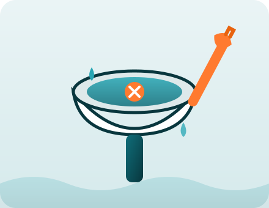

Qué incluye el servicio
- Diagnóstico del tapón: miramos antes de actuar.
- Destape con equipo de presión, sin químicos agresivos.
- Prueba de caudal para confirmar que baja bien.
- Limpieza final del baño, sin olores.
Plomería · Inodoros
Servicio con diagnóstico previo, sin obra sucia y con garantía. Escribinos por WhatsApp y lo coordinamos el mismo día, de 9 a 18 hs.

Cuando el inodoro no baja, el problema suele estar en la cañería y no en la loza. Lo encontramos y lo resolvemos con método, sin romper ni ensuciar.
Trabajamos en la Ciudad Autónoma de Buenos Aires (CABA). Decinos tu barrio y confirmamos el paso.
"Tenía el inodoro tapado y venía mal hacía días. Lo destaparon en el día y no quedó ni un olor. Recomendables."
"Me explicaron qué pasaba antes de cobrar. Sin quilombos ni obra sucia. Volvería a llamarlos."
"Buen trato y puntuales. A las pocas horas el baño funcionaba como nuevo. Gracias por el dato."
Coordinamos el paso el mismo día dentro del horario de 9 a 18 hs. En Capital Federal solemos llegar en un rango de unas pocas horas según la zona y la demanda del momento.
No hace falta. Trabajamos con diagnóstico y equipo de presión para destapar la cañería del inodoro sin verter soda cáustica ni productos agresivos que dañen las cañerías.
El servicio tiene garantía: si el inodoro vuelve a taparse por la misma causa dentro del plazo acordado, volvemos a revisarlo sin costo adicional del primer paso.
El diagnóstico va incluido en la visita. Antes de empezar te decimos qué tiene el inodoro y cuánto sale el destape, para que decidas con la información clara.
Nuestro horario de atención es de 9 a 18 hs. Para urgencias fuera de ese rango escribinos igual por WhatsApp y vemos la posibilidad según disponibilidad.
No. Trabajamos con método de destape sin obra sucia: al terminar dejamos el baño limpio y sin olores molestos.
Completá el formulario y al enviarlo se abre tu chat de WhatsApp con el mensaje listo. Sin email, sin dar vueltas.